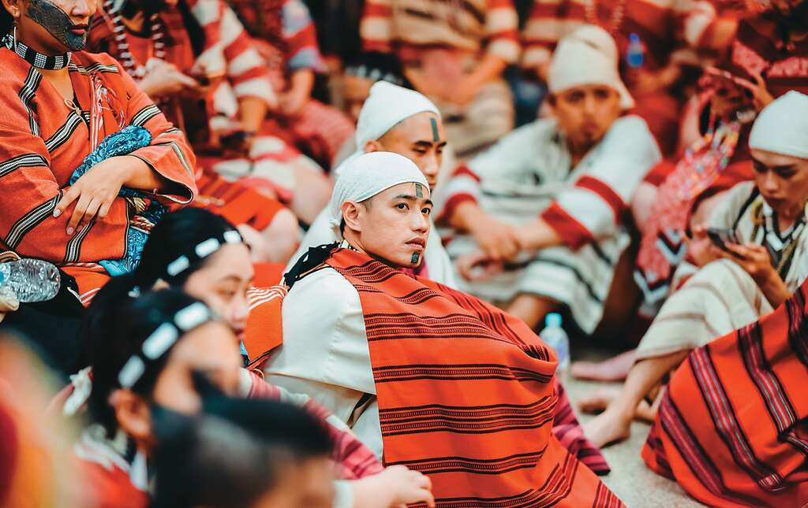
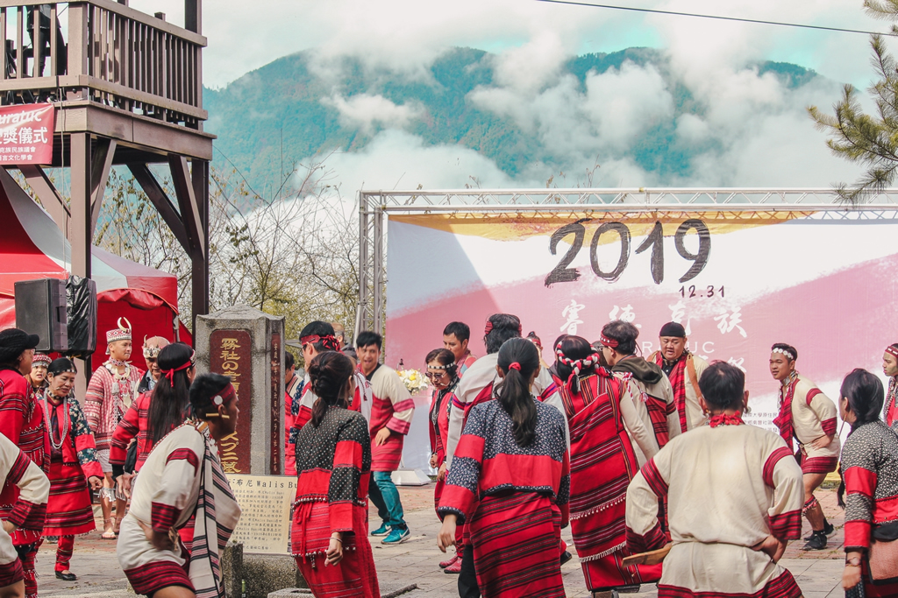

族群介紹
賽德克族主要分布於南投、花蓮等中央山脈一帶，是山區原住民族之一。 傳統上以山林狩獵、農耕與採集為主要生活方式，對於山川、森林與河流有深厚情感。
賽德克族以紋面文化與勇士精神為人所知，「成為真正的人（malu Seediq）」是重要價值觀。 霧社事件更成為族群歷史記憶的一部分，也在近代電影與文學中被廣泛討論。
地理位置
賽德克族主要聚居於南投仁愛鄉、花蓮秀林鄉等地，分布於中央山脈兩側山區。
景點特色
以下為與賽德克族歷史與文化相關的重要地點：
| 地點名稱 | 地區 | 特色說明 |
|---|---|---|
| 霧社地區 | 南投縣仁愛鄉 | 與賽德克族歷史密切相關的重要地點，曾發生霧社事件，是族群記憶與台灣近代史的重要篇章。 |
| 賽德克族部落（如清流部落等） | 南投、花蓮山區 | 保留語言、祭儀與生活方式的族人聚落，可透過導覽與訪談認識賽德克日常文化。 |
飲食文化
賽德克族飲食結合山林環境，多運用野菜、獸肉與傳統穀類：
| 食物名稱 | 主要材料 | 文化說明 |
|---|---|---|
| 鹹豬肉／煙燻肉 | 豬肉、鹽巴、香料 | 利用燻烤與醃製方式保存肉類，是家族聚會與重要祭儀中常見料理。 |
| 小米與地瓜料理 | 小米、地瓜、野菜 | 反映山區農耕與在地作物運用的飲食文化，也是傳統主食之一。 |
照片與影片介紹
部落與山林照片
 以上為賽德克族的衣著特色。
影片介紹
以上為賽德克族相關介紹影片。